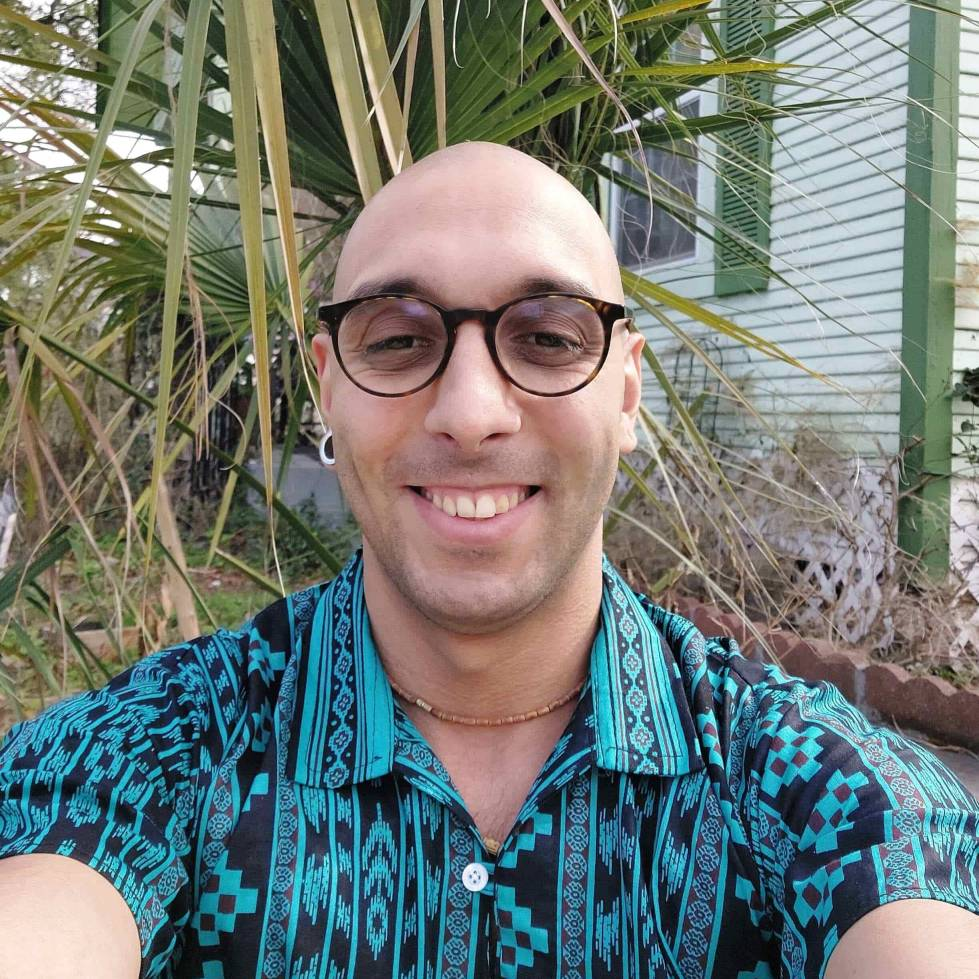

j-ISBA board members
Xenia Miscouridou. Section Chair

Xenia is a Junior Research Fellow at the Department of Computer Science, University of Oxford and Wolfson College. Previously she was a postdoctoral reseracher at Imperial College Mathematics Department and she has worked for AIG as a Machine Learning Scientist. She holds a PhD in Statistical Machine Learning from the Department of Statistics at the University of Oxford supervised by Francois Caron and Yee Whye Teh. During her PhD, she has been a Research Visitor at the Alan Turing Institute in London and the Courant Institute at NYU. She previously completed the Part III of the Mathematical Tripos at the University of Cambridge and a BSc in Mathematics from Imperial College London. Xenia's research interests cover Nonparametric Bayesian methods, random graphs and network modeling, deep generative models and spatiotemporal applications. Her research goal is to build methods that combine the strengths of statistics and computation aspiring to answer scientific questions with impact in real life. You can find out more about Xenia at her webpage and twitter account.
Alejandra Avalos. Section Chair-Elect

Alejandra is a Research fellow at the University of Florence in the Department of Statistics, Computer Science, Applications ''G. Parenti' and an Affiliated member at Harvard University in the Harvard-MIT Center for Regulatory Science. Previously she was a postdoctoral fellow in Statistics at Harvard Medical School, and she was also part of the Department of Data Science at the Dana-Farber Cancer Institute. Alejandra did her PhD in Statistics on the joint CDT programme between the University of Warwick and the University of Oxford (OxWASP), supervised by Dr David Rossell (UPF) and Dr Richard Savage (Warwick). Her Phd thesis was granted the Savage award in the category Applied Methodology. Her main research interests include high-dimensional inference, applied Bayesian statistical modelling, dimensionality reduction, data integration, graphical models, and clinical trials. She is interested in applications to problems in medicine, in particular cancer. If you want to find out more about Alejandra visit her webpage or follow her on twitter.
Sally Paganin. Treasurer

Sally Paganin is a Postdoctoral Research fellow in the Department of Biostatistics at Harvard T.H. Chan School of Public Health, collaborating with Jeff Miller on statistical methods for early cancer detection. Previously, she was Postdoctoral Researcher at UC Berkeley, where she worked with Perry de Valpine & Chris Paciorek on Bayesian methodology and algorithms. She is also part of the core team developing NIMBLE, a flexible R-based software for Bayesian hierarchical models. She is originally from Italy, where she obtained her PhD in Statistical Sciences at University of Padova in 2019. Her research focuses on Bayesian nonparametrics and latent variable models, along with the development of statistical software and algorithms. You can find more about her here.
Fan Bu. Program Chair
Fan is a Postdoctoral Research Fellow at University of California, Los Angeles, working with Dr. Marc Suchard. She completed her PhD in Statistics at Duke University under Dr. Alexander Volfovsky, during which she won the ASA SBSS Student Paper Award for her work on stochastic epidemic modeling on dynamic networks. She has great interest in developing statistical methods for knowledge discovery from complex data sets with partial observations. In particular, her research has been inspired by real-world data-related problems in infectious disease transmission, social network analysis, and sports analytics. Upon joining UCLA, she has been actively involved in the Observational Health Data Sciences and Informatics (OHDSI) research network, developing statistical methodologies and computing tools for reliable evidence extraction from large-scale health data sets. You can find more about Fan at her webpage.
Cecilia Balocchi. Secretary

Cecilia is a Lecturer in Statistics in the School of Mathematics, University of Edinburgh. Previously, she was a Postdoctoral Research fellow at the University of Torino in the Department of Economics and Statistics. She obtained her PhD in Statistics at the University of Pennsylvania, supervised by Shane Jensen and Ed George. Her research interests span topics in Bayesian nonparametrics, hierarchical modeling and spatial methods, with a focus on modeling data organized in discrete structures. You can find out more about Cecilia at her webpage.
Beniamino Hadj-Amar. Treasurer
Beniamino is a Postdoctoral Fellow at Rice University (Houston, TX) in the Department of Statistics, working with Marina Vannucci. He has obtained his Ph.D. in the Oxford-Warwick Statistics Programme (OxWaSP), under the supervision of Bärbel Finkenstädt (University of Warwick, UK). His main area of research is at the interface between statistics and science, where he is particularly interested in the development of Bayesian methodologies for the automated analysis of complex dynamical time series. Throughout his academic experience, he has been working on addressing scientific problems in several fields, such as respiratory research, circadian studies and neuroscience. From a methodological perspective, his research interests include switching models, change-point models, Bayesian nonparametrics, statistical spectral analysis, graphical models, and mixture models. You can find more about Beniamino at his webpage.